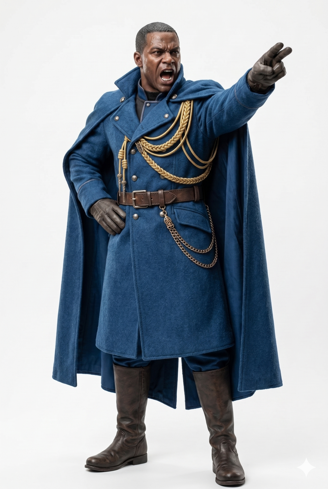

Synopsis
あらすじ
銀河の片隅、砂塵が舞う辺境の街に、「モンスター」と呼ばれる男が現れる。名も捨て、組織にも属さず、ただ黒いライトセーバーを腰に下げた流れ者。
帝国の亡霊「ファースト・オーダー残党」が幅を利かせ、純白の外套をまとう「ジェダイ聖堂派」が正義の名のもとに街を支配しようとするこの時代に、モンスターは何の目的も持たないまま戦い続ける。
やがて彼の前に、ファースト・オーダー残党の脱走兵・ライサ、その妹・リルカ、そして彼自身の暗い過去を知る者たちが現れ、銀河の命運を巡る嵐の中心へと引き込まれていく。
全36エピソード。愛と喪失、裏切りと覚悟が交差する、スター・ウォーズファン小説。